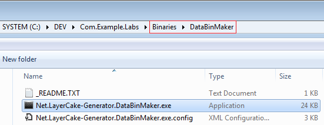
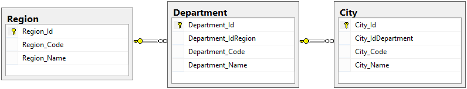
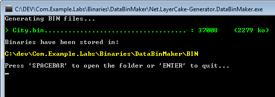

LayerCake Generator comes with the DataBinMaker tool. It is located to the Binaries\DataBinMaker folder.
This tool is used to extract data from the database and to create bin files with compression support. It should be used with big data to increase client application performances.
Let's take an example.
Our database has 3 tables.
These tables contain all the cities, departments and regions of France (37008 cities !).
Suppose we want to create a new method to retrieve all the cities with the associated departments and regions.
City_Custom_GetAllCities stored procedure
CREATE PROCEDURE [dbo].[City_Custom_GetAllCities] ( @CtxUser BIGINT = NULL, -- Not used @CtxCulture VARCHAR(2) = N'EN', -- Not used @CtxWithContextSecurity BIT = N'True' -- Not used ) AS BEGIN SET NOCOUNT ON; SELECT [Region].*, [Department].*, [City].* FROM [City] INNER JOIN [Department] ON [Department].[Department_Id] = [City].[City_IdDepartment] INNER JOIN [Region] ON [Region].[Region_Id] = [Department].[Department_IdRegion] ORDER BY [City].[City_Name], [City].[City_Code] END
GetAllCities method (in the CityCrud class)
// Crud | CityCrud.custom.cs public partial class CityCrud { /// <summary> /// Retrieves all the City records from the database (with the Departments and Regions) /// </summary> /// <returns>The collection of City instances.</returns> public TCollection<City> GetAllCities() { using (var et = new ExecutionTracerService()) { return base.ToEntityCollection("City_Custom_GetAllCities", null); } } }
Once the LayerCake Generator Process is finished the GetAllCities method can be called on client-side.
But this business implementation is quite bad because it retrieves all the records from the database each time the method is invoked.
The best practice is to use Cache Support (server-side / business layer).
// Business | AppBusiness\LocalisationBusiness.cs namespace Com.Example.Labs.Business { using System; using System.Collections.Generic; using System.Linq; using System.Text; using System.Threading.Tasks; using Com.Example.Labs.Core; using Com.Example.Labs.Crud; using Com.Example.Labs.Models; [BusinessClass] public class LocalisationBusiness : BusinessBase { #region [ Members ] private static readonly object _locker = new object(); #endregion [BusinessMethod] public TCollection<City> GetCityCollection(IUserContext userContext) { const string cacheKey = "LocalisationBusiness.GetCityCollection"; TCollection<City> cities = CacheServiceHelper.Current.Get<TCollection<City>>(cacheKey); if (cities == null) { lock (_locker) // concurrency { cities = CacheServiceHelper.Current.Get<TCollection<City>>(cacheKey); if (cities == null) { cities = new TCollection<City>(); using (var et = new ExecutionTracerService()) using (var db = new CityCrud(userContext)) { cities = db.GetAllCities(); } CacheServiceHelper.Current.Add(new CacheItem { Key = cacheKey, Data = cities, Expiration = DateTime.MaxValue }); } } } return cities; } } }
It is a really cool implementation thanks to the Cache Support.
But what about network performances? It may take several seconds to serialize/deserialize and transit data (37008 City entities) over the network (from server-side to client one).
It is time to use DataBinMaker (sources are available in the Tools folder).
Open and edit the Net.LayerCake-Generator.DataBinMaker.exe.config file.
// Net.LayerCake-Generator.DataBinMaker.exe.config <?xml version="1.0" encoding="utf-8" ?> <configuration> <configSections> <section name="tableBinConfiguration" type="Net.LayerCake_Generator.DataBinMaker.TableBinSectionHandler, Net.LayerCake-Generator.DataBinMaker"/> </configSections> <connectionStrings> <add name="Default" connectionString="Data Source=localhost;Initial Catalog=Labs;Integrated Security=SSPI;"/> </connectionStrings> <appSettings> <!-- Relative or absolute path where are generated the binary files --> <add key="DataBinMaker.OutputBinPath" value="BIN" /> <!-- Value indicating whether the GZIP compression is used --> <add key="DataBinMaker.WithCompression" value="true" /> <!-- Value indicating whether the created BINs are checked after creation --> <add key="DataBinMaker.WithBinChecking" value="true" /> </appSettings> <tableBinConfiguration> <tables> <!-- Will create a Category.bin file containing all the Category records (using the 'Default' connection string) --> <!-- <table name="Category" connectionStringName="Default" /> --> <!-- Will create a City.bin file containing the City records (+Departments +Countries) (using the 'Default' connection string) --> <table name="City" connectionStringName="Default" request="SELECT [City].*, [Department].*, [Region].* FROM [City] INNER JOIN [Department] ON [Department].[Department_Id] = [City].[City_IdDepartment] INNER JOIN [Region] ON [Region].[Region_Id] = [Department].[Department_IdRegion]" /> </tables> </tableBinConfiguration> </configuration>
Execute DataBinMaker to run the process.
The City.bin file is created. This file contains all the compressed data (DataTable inner object) for the specified SQL request.
Now we can write an optimized implementation on client-side using Cache and DataBin supports.
// Client-side | Localisation.cs public class Localisation { #region [ Members ] private static readonly object _locker = new object(); #endregion public TCollection<City> GetCityCollection(IUserContext userContext) { const string cacheKey = "Localisation.GetCityCollection"; const string binRelativePath = @"App_Data\DataBinaries\City.bin"; // 1. Try to get data from local cache... var cities = CacheServiceHelper.Current.Get<TCollection<City>>(cacheKey); if (cities == null) { lock (_locker) { cities = CacheServiceHelper.Current.Get<TCollection<City>>(cacheKey) as TCollection<City>; if (cities == null) { // 2. Cache empty -> Try to get data from binary file... cities = new TCollection<City>(); using (var et = new ExecutionTracerService()) { string binPath = Path.Combine(AppDomain.CurrentDomain.BaseDirectory, binRelativePath); if (File.Exists(binPath)) { DataTable dt = SerializerHelper.ToObject<DataTable>(binPath, isCompressed: true /* because DataBinMaker.WithCompression = true */); foreach (DataRow row in dt.Rows) { City city = new City(); city.DeepMap(row); cities.Add(city); } } if (cities.IsNullOrEmpty()) { // 3. No binary file -> Try to get data from WCF call (can take too many times!)... using (var service = new ServiceProxy<ILocalisationService>()) { cities = service.Proxy.GetCityCollection(userContext); } } } // 4. Store data in local cache for next calls... CacheServiceHelper.Current.Add(new CacheItem { Key = cacheKey, Data = cities, Expiration = DateTime.MaxValue }); } } } return cities; } }
No database access. No WCF call (and no serialization/deserialization). Great!
Finally we have
Here a sample to generate and read binary files by code
TCollection<City> cities = ... var dataBinService = new DataBinService(); string binPath = Path.Combine(PathHelper.GetTempPath(withCreation: true), "City.zip.bin"); // Create the compressed binary file dataBinService.GenerateBinFilebinPath, cities, withCompression: true); // Extract data from the compressed binary file cities = dataBinService.GetDataFromBinFile<City>(binPath, isCompressed: true);